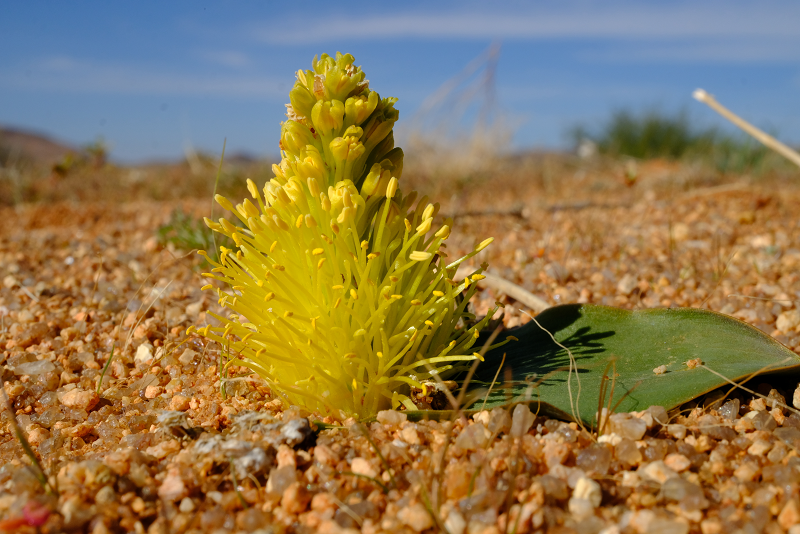
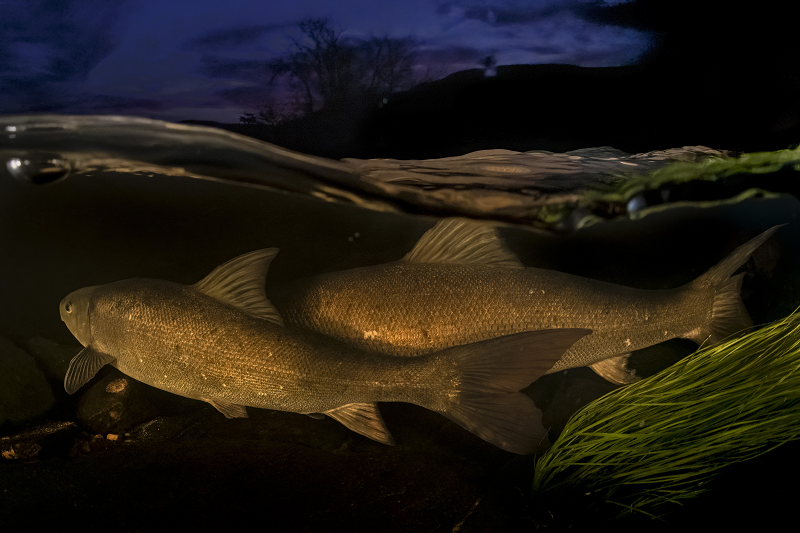

Species threat status
South Africa has assessed the national threat status of 25 474 indigenous taxa from 15 taxonomic groups, using the IUCN Red List of Threatened Species Categories and Criteria. The system classifies species according to their risk of extinction. South Africa also applies national adjustments to the global Red List methods, resulting in threat status being reported across 10 threat status categories.


Of the assessed taxa, 0.5% are extinct or possibly extinct (122 taxa) and a further 3 659 taxa are threatened with extinction (14%). South Africa has high levels of species endemism – 75% of freshwater crab, 67% of plant, 57% of spider, 56% of amphibian, 52% of butterfly, 49% of freshwater fish, 44% of fairy shrimp (Anostraca), 38% of reptile and 36% of seabream taxa are endemic. For all of these groups, levels of threat to endemic taxa are higher than for all indigenous taxa (Figure 1). Overall, 20% of endemic taxa are threatened with extinction (3 213 taxa) and 0.8% are extinct or possibly extinct (120 taxa).
The most threatened taxonomic groups in South Africa are cartilaginous fishes (sharks, rays and chimaeras), as 42 % are threatened. Most of these species are wide ranging and much of their decline can be attributed to poor fisheries management in other parts of the world. Six of the 13 species of endemic sharks, rays and chimaeras are threatened, indicating that the country has a responsibility to reverse declines of these charismatic predators. When only considering endemics, South Africa’s freshwater fishes are the most threatened comprehensively assessed group with 66% of species threatened due to competition with invasive alien fish and degradation of their freshwater systems through water abstraction, pollution and inappropriate sedimentation.
First time assessments for two groups of invertebrates show that spiders have very low levels of threat compared to other taxa (only 3% threatened), while fairy shrimps (Anostraca) are within the top three groups with the highest levels of threat (44% threatened). Degradation of South Africa’s arid wetland ecosystems is threatening this unique group of species, as Anostraca are dependent on ephemeral wetlands. Freshwater crabs were first assessed in South Africa in 2007, and a repeat assessment for this NBA indicates that 13% of species are threatened. Due to poor taxonomic knowledge and a paucity of occurrence records, most marine and coastal invertebrates cannot be assessed, however, a sample of utilised marine species shows that 18% are threatened. Of the 20 coastal invertebrates assessed (the first sandy beach invertebrates to be added to the IUCN Red List of Threatened Species globally), four (20%) are listed as Endangered and a further three (15%) are Near Threatened. The pressures on coastal invertebrates are mainly mining on the West Coast, coastal development and associated artificial light at night, and removal of washed-up kelp from the shore.

The proportion of threatened taxa varies across realms (Figure 2). Of the species that have been assessed, the marine realm currently has the highest proportion of threatened taxa (36%), followed by the estuarine realm (18%). Both the marine and estuarine assessments have prioritised economically important and charismatic species over comprehensive taxonomic assessments for full taxonomic groups, and this may have inflated the proportion of threatened taxa. Species assessments in the marine realm are also limited by gaps in taxonomic knowledge, and the lack of information on species distribution, life histories and long-term population trends has resulted in high levels of data deficiency. The terrestrial assessments also include many Data Deficient taxa since many genera of plants and invertebrates still require taxonomic work and are not yet sufficiently well delineated for a threat status to be assigned. For the freshwater and terrestrial realms, complete taxonomic groups have been assessed, providing greater confidence in the results. Approximately 16% of freshwater and 14% of terrestrial taxa assessed to date are threatened. Despite lower threat percentages, the terrestrial realm has suffered the highest extinction toll (44 confirmed extinct species and a further 77 highly likely to be extinct).
Species protection level
Species protection level measures the contribution of the national protected area network to species persistence. The indicator considers two factors - the contribution of a protected area to meeting a population target, as well as the effectiveness of the protected area in mitigating pressures on species. Species are categorised in four categories, depending on the percentage of their conservation target met.
This indicator has been used to assess terrestrial and freshwater species within six taxonomic groups (Figure 3). Plants were assessed using a representative sample of 900 taxa. Peripheral taxa, which have less than 5% of their distribution range occurring in South Africa, were excluded from the analysis. Protection level has been calculated for 2 449 taxa.

Except for freshwater fishes, South Africa’s protected area network protects species relatively well, with more than 50% of taxa assessed as Well Protected in most groups (Figure 3 A). The protection level of birds and reptiles is particularly good, with more than 85% of taxa in both groups being Well Protected.
Protection levels of endemic species are generally lower (Figure 3 B), with freshwater fishes and amphibians having the highest proportion of endemic species that are Not Protected, 36% and 19% respectively. Endemic mammals are of some concern as 20 taxa (34%) are Poorly Protected and four taxa (7%) are Not Protected.
The effectiveness of protected areas in mitigating pressures on species reveals some interesting case studies. When protected areas are not effective, it can result in species falling to a lower protection level category than an assessment based solely on the population protected. While 38% of freshwater fishes are well represented within protected areas, many species are not being effectively protected due to the presence of invasive alien fish species within the protected areas’ freshwater systems and limited management interventions in place to control these invasive species. Pollution and over-abstraction of water upstream of the protected area boundary further compromise protection effectiveness. Consequently, only 23% of South African freshwater fish species qualify as Well Protected once the impact of these pressures is taken into consideration.


Fifty-five birds (8.3%) are placed in lower protection level categories after effectiveness is included. The effectiveness adjustment reduces the protection level score particularly for wetland species (e.g., flamingos, cranes, pelicans) and raptors (e.g., vultures, harriers).
Amphibians and plants are also significantly impacted by pressures within protected areas, resulting in 7% of both amphibians and plants assessed in lower protection level categories. While amphibians are impacted by high levels of invasive alien species within protected areas, the main reason for failures in plant protection effectiveness is the high levels of plant poaching in the protected areas of Namaqualand.
Eighteen mammals (7%) are assessed in lower protection level categories due to poaching and bushmeat hunting within protected areas.
The Species Protection Level indicator has recently been adapted into the Species Protection Index, following the principles of the IUCN Red List Index of species. The index tracks changes in species protection level over time and is used for national and international biodiversity reporting.
Many species have improved in their protection level since the last assessment in 2018. A total of 5% of plant species assessed have improved in protection level with the newly proclaimed Mountain Zebra-Camdeboo Protected Environment, Gamsberg Nature Reserve, and Orange River Mouth Nature Reserve. Nine bird species (1%), four amphibian species (3%), nine freshwater fish species (9%), eight (3%) mammal taxa and seven (2%) reptile species have shown improvements in protection level. The improved protection level for reptiles is specifically due to the newly proclaimed De Hoop Dam and Mphaphuli Protected Environments and the Thengwe Nature Reserve, all in Limpopo.
Intersecting threat status and protection level
While overall protection of species has improved, threatened species remain inadequately protected. Less than 30% of threatened amphibian, mammal and plant species, and only 5% of threatened freshwater fishes are Well Protected. On a positive note, nearly 60% of threatened bird and reptile species are Well Protected.
Some species have benefited from the expansion of protected areas and targeted management interventions, however these successes are limited and most threatened species remain under protected. For example, the Endangered freshwater fish species the Verlorenvlei redfin (Pseudobarbus verloreni) has shifted from Not Protected to Poorly Protected following the declaration of a new protected area that now covers one of its populations. Unfortunately the broader pattern for freshwater fishes is that protected areas do little to shield species from ongoing pressures of invasive species, over-abstraction of water and pollution.
Species threat status and protection level assessments provide a useful basis for guiding prioritisation processes. Highly threatened (Critically Endangered and Endangered) and under protected (Not Protected and Poorly Protected) species represent the most urgent need for conservation action, particularly when they are endemic to South Africa. Across all taxon groups 5% of taxa (127/2 449) fall into this category, and the majority of these are South African endemics (80%, 104/127 taxa). Freshwater fishes and amphibians have the highest proportion of species in this category, 27% (26/96 assessed fishes) and 13% (17/133 assessed amphibians), respectively. Both groups make use of freshwater habitats, which are also typically threatened ecosystems. Five per cent of plant species and close to 10% of all assessed mammal species are both highly threatened and under protected. Birds and reptiles have fewer species (less than 2%) within this category, and these species include habitat specialists and range-restricted species that require specific targeted protected area expansion.

